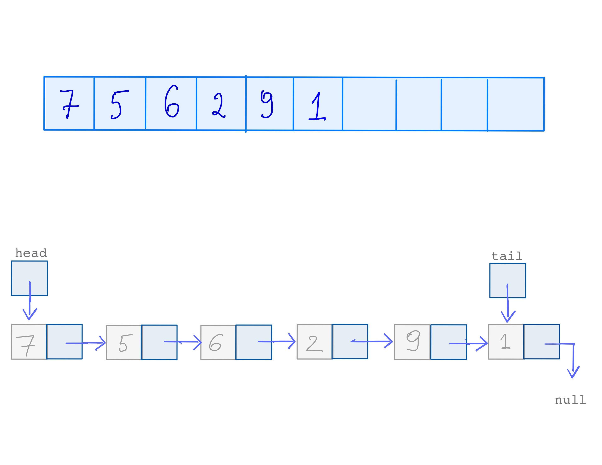
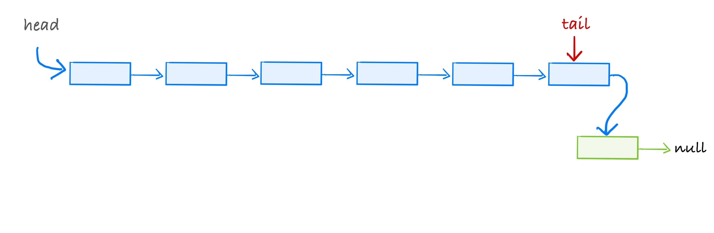
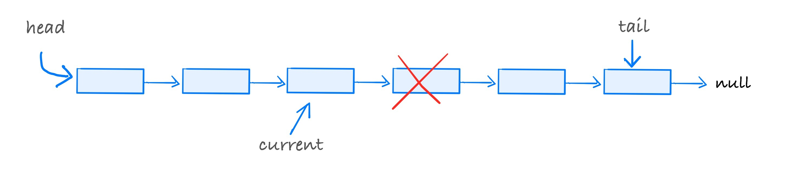
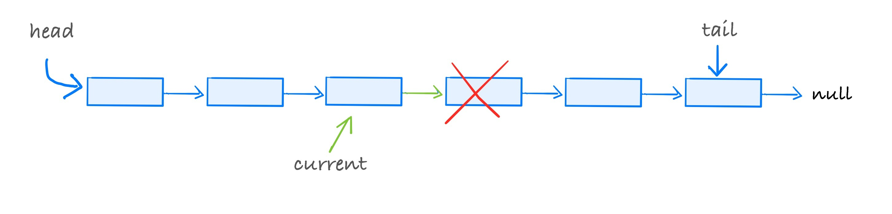

class: center, middle, title-slide # CSCI-UA 102 ## Data Structures <br> ## Lists (Part 1) .author[ Instructor: Joanna Klukowska <br><br><br> ] .license[ Copyright 2020 Joanna Klukowska. Unless noted otherwise all content is released under a <br> [Creative Commons Attribution-ShareAlike 4.0 International License](https://creativecommons.org/licenses/by-sa/4.0/).<br> Background image by Stewart Weiss<br>] --- layout:true template: default name: section class: inverse, middle, center --- layout:true template: default name: poll class: inverse, full-height, center, middle --- layout:true template: default name: breakout class: breakout, middle --- layout:true template:default name:slide class: slide .bottom-left[© Joanna Klukowska. CC-BY-SA.] --- template: section # Abstraction --- ## What is abstraction (in computer science)? <a title="Tomwsulcer / CC0" href="https://commons.wikimedia.org/wiki/File:Generalization_process_using_trees_PNG_version.png"> <img width="180px" style="float:right; padding:10px" alt="Generalization process using trees PNG version" src="https://upload.wikimedia.org/wikipedia/commons/f/f3/Generalization_process_using_trees_PNG_version.png"> </a> <br><br> In general, __abstraction__ is a conceptual process where general rules and concepts are derived from generalization of specific examples. .small[ __Example:__ In the image on the right, the _tree_ on the bottom is an abstraction of a tree - it resembles the actual trees just enough to convey a message of being a tree without containing any details of what specific tree it might be (which in many situations might be irrelevant). ] -- In computer science, __abstraction__ is a process of hiding details of implementation in programs and data. .small[ - because such details are irrelevant and distract from the important concepts - because the user/client of a given code/system does not need to know the details in order to use the code/system effectively. ] -- An __abstract data type (ADT)__ is the specification of a data type (a set of values and a collection of operations on those values), independent of its implementation. <br> - an ADT's operations can be used without knowing their implementations or how the data is stored, as long as the interface to the ADT is precisely specified - an ADT is implementation independent in many different ways - a language independent ADT can be implemented in different programming languages - a language dependent ADT is a way of describing an ADT using a particular programming language, for example, an interface in Java --- ## A List ADT __Intuitive list__ - a collection of elements with some notion of position information for each element - operations: - add/remove at specified positions, - find an element in the list (or determine that it is not there) - retrieve an element from a particular position - determine the length of the list - empty the list -- __A List ADT__ - values stored - the list of elements itself - size - current number of elements in the list - operations - `add(item, pos)` - adds an element at position pos, restriction: 0 <= pos < size, shifts elements starting at pos one to the right (higher position values) - `remove(pos)` - removes and returns an element at position pos, restriction: 0 <= pos < size, shifts elements starting at pos+1 one to the left (lower position values) - `find(item)` - determines if the item is in the list and if so returns its position, otherwise returns -1 - `get(pos)` - retrieves and returns an item from position pos, restriction: 0 <= pos < size - `size()` - returns the current number of elements in the list, i.e. size - `clear()` - removes all elements from the list, and reset size to 0 --- ## A List ADT in Java ```Java // List ADT public interface List<E> { // adds an element 'it' at position pos, shifts elements starting at pos by // one position to the right (higher position values) // throws NoSuchElementException if pos < 0 or pos >= size public boolean add(E it, int pos) throws NoSuchElementException; // removes and returns an element at position pos, shifts elements starting // at pos+1 by one to the left (lower position values) // throws NoSuchElementException if pos < 0 or pos >= size public E remove(int pos) throws NoSuchElementException; // determines if 'it' is in the list and if so returns its position, // otherwise returns -1 public int find (E it) ; // retrieves and returns an item from position pos // throws NoSuchElementException if pos < 0 or pos >= size public E get( int pos) throws NoSuchElementException; // returns the current number of elements in the list public int size(); // removes all elements from the list, so it is once again empty public void clear(); } ``` --- ## Java's own List ADT Java provides its own [`List` interface](https://docs.oracle.com/en/java/javase/11/docs/api/java.base/java/util/List.html) that is implemented by several built in classes, among them the `ArrayList<E>` class. --- template: section # List Implementations --- ## Specific List Implementations A given list ADT can be implemented using different designs and approaches.  <br><br> We usually consider two different ways of implementing a list: - using an array as an underlying storage - using a reference based structure as an underlying storage .below-column2[ The differences in how the operations are implemented reflect the differences in how the elements are stored. ] --- template: section # Reference Based Implementation ## a.k.a. Linked List --- ## Nodes (or a Linked List Building Blocks) The list is usually composed of __nodes__ that contain the actual data part and the memory address of the next element. .left-column2-large[ - The first node definition assumes that the data elements are of type `int`. - The second node definition assumes that the data elements are of type `String`. ] .right-column2-small[ ```Java class Node { int data; Node next; } ``` ```Java class Node { String data; Node next; } ``` ] -- .below-column2[ But other than the type of data, is there really any difference in what nodes need to _do_? ] -- .left-column2-large[ - The last definition is __generic__. It defines a node that can store any reference data type. .small[ `Node<Integer> n = new Node<Integer>();` - creates a node that stores integers ] .small[ `Node<String> n = new Node<String>();` - creates a node that stores strings ] .small[ `Node<Penguin> n = new Node<Penguin>();` - creates a node that stores penguins ] .small[ (note: in recent versions of Java, the type name can be skipped in the second location: <br> `Node<Integer> n = new Node<>();`) ] ] .right-column2-small[ ```Java class Node <E> { E data; Node<E> next; } ``` ] --- ## Iterating Through a List A common task when working with list is to iterate through an existing list. We'll go over examples of how to do it the right way and the wrong way. --- name: iterate-right ## Iterating Through a List - the right way --- template: iterate-right .center[ ] .center80[ - given a list, we need to pick a starting point for the iteration ] --- template: iterate-right .center[ <img alt="iterate through a list" src="img/05/iterate-33.jpg" width=700px /> ] .center80[ - given a list, we need to pick a starting point for the iteration - a good starting point is the first elements whose reference is stored in the `head` variable `Node current = head;` ] --- template: iterate-right .center[ ] .center80[ - given a list, we need to pick a starting point for the iteration - a good starting point is the first elements whose reference is stored in the `head` variable `Node current = head;` - to advance the `current` reference to the next node, we need to change the memory address that it stores to the memory address that is stored in the `next` reference of the node to which it points `current = current.next;` ] --- template: iterate-right .center[ ] .center80[ - given a list, we need to pick a starting point for the iteration - a good starting point is the first elements whose reference is stored in the `head` variable `Node current = head;` - to advance the `current` reference to the next node, we need to change the memory address that it stores to the memory address that is stored in the `next` reference of the node to which it points `current = current.next;` - to go through the entire list, we just repeat the last step ``` while ( ... ) { current = current.next; } ``` ] --- template: iterate-right .center[ ] .center80[ - given a list, we need to pick a starting point for the iteration - a good starting point is the first elements whose reference is stored in the `head` variable `Node current = head;` - to advance the `current` reference to the next node, we need to change the memory address that it stores to the memory address that is stored in the `next` reference of the node to which it points `current = current.next;` - to go through the entire list, we just repeat the last step ``` while ( ... ) { current = current.next; } ``` ] --- template: iterate-right .center[ ] .center80[ - given a list, we need to pick a starting point for the iteration - a good starting point is the first elements whose reference is stored in the `head` variable `Node current = head;` - to advance the `current` reference to the next node, we need to change the memory address that it stores to the memory address that is stored in the `next` reference of the node to which it points `current = current.next;` - to go through the entire list, we just repeat the last step ``` while ( ... ) { current = current.next; } ``` ] --- template: iterate-right .center[ ] .center80[ - given a list, we need to pick a starting point for the iteration - a good starting point is the first elements whose reference is stored in the `head` variable `Node current = head;` - to advance the `current` reference to the next node, we need to change the memory address that it stores to the memory address that is stored in the `next` reference of the node to which it points `current = current.next;` - to go through the entire list, we just repeat the last step ``` while ( ... ) { current = current.next; } ``` ] --- template: iterate-right .center[ ] .center80[ - given a list, we need to pick a starting point for the iteration - a good starting point is the first elements whose reference is stored in the `head` variable `Node current = head;` - to advance the `current` reference to the next node, we need to change the memory address that it stores to the memory address that is stored in the `next` reference of the node to which it points `current = current.next;` - to go through the entire list, we just repeat the last step ``` while ( ... ) { current = current.next; } ``` ] --- name: iterate-condition ## Iterating Through a List - the right way __What should be the condition used in the iteration?__ -- Well, this depends on what we are trying to do: .left-column2-smaller[ - go through all the nodes and _fall off_ the list at the end ``` Node current = head; while (current != null ) { current = current.next; } ``` ] .right-column2-larger[ <br> ] -- .below-column2[ <br> ] .left-column2-smaller[ - go through all the nodes and stop at the last node ``` Node current = head; if (current != null ) { while (current.next != null ) { current = current.next; } } ``` ] .right-column2-larger[ <br> ] --- ## Iterating through the list - the wrong way Here is an example of a function that attempts to print the content of the entire list. It is a member function of the list itself. ``` void printList ( ) { while ( head != null ) { System.out.print(head.data + ", "); head = head.next; } } ``` -- - Will the content of the list be printed? -- __YES__ -- - So what is _wrong_ about this iteration? --- template: section ## Adding to a Linked List --- ## Adding to a Linked List In order to add an element to the list we first need to create a new `Node`: .center80[ `Node n = new Node();` ] -- Then, depending on the location at which we are adding, we may consider three separate cases: - adding to the front of a list - adding to the end of a list - adding at some position in between -- We also need to make sure that our algorithm for adding works in case of an empty list, one-element list and a list with many elements. --- name:empty-lists ## An Empty List In an empty list, both `head` and `tail` references point to nothing. In this case, we need to make them both point to the newly created node. .left-column2-small[ an empty list ] .right-colum2-large[ ] .below-column2[<br>] .left-column2-small[ ``` Node n = new Node(); head = n; tail = n; ``` ] .right-colum2-large[ ] --- name: add-front ## Adding to the front of a list What is the sequence of steps required to add to the beginning of a list? --- template: add-front .center[ <img alt="add to front of a list" src="img/05/add-front-11.jpg" width=700px /> ] .center80[ `Node n = new Node();` ] --- template: add-front .center[ <img alt="add to front of a list" src="img/05/add-front-12.jpg" width=700px /> ] .center80[ `Node n = new Node();` <br> `head = n; `<br> ] --- template: add-front .center[ <img alt="add to front of a list" src="img/05/add-front-13.jpg" width=700px /> ] .center80[ `Node n = new Node();` <br> `head = n; `<br> ] --- template: add-front .center[ ] .center80[ `Node n = new Node();` <br> `head = n; `<br> ] --- template: add-front .center[ <img alt="add to front of a list" src="img/05/add-front-15.jpg" width=700px /> ] .center80[ `Node n = new Node();` <br> <span style="text-decoration: line-through red;">`head = n; `</span><br> ] If we change where the `head` to point to the newly created node, the rest of the list is lost and cannot be recovered. --- template: add-front .center[ <img alt="add to front of a list" src="img/05/add-front-16.jpg" width=700px /> ] .center80[ `Node n = new Node();` <br> `n.next = head`<br> ] --- template: add-front .center[ <img alt="add to front of a list" src="img/05/add-front-17.jpg" width=700px /> ] .center80[ `Node n = new Node();` <br> `n.next = head`<br> ] --- template: add-front .center[ ] .center80[ `Node n = new Node();` <br> `n.next = head`<br> ] --- template: add-front .center[ <img alt="add to front of a list" src="img/05/add-front-19.jpg" width=700px /> ] .center80[ `Node n = new Node();` <br> `n.next = head`<br> `head = n` <br> ] --- template: add-front .center[ <img alt="add to front of a list" src="img/05/add-front-20.jpg" width=700px /> ] .center80[ `Node n = new Node();` <br> `n.next = head`<br> `head = n` <br> ] --- template: add-front .center[ ] .center80[ `Node n = new Node();` <br> `n.next = head`<br> `head = n` <br> ] --- name: add-back ## Adding to the end of a list What is the sequence of steps required to add to the end of a list? --- template: add-back .center[ <img alt="add to front of a list" src="img/05/add-back-4.jpg" width=700px /> ] .center80[ `Node n = new Node(); ` <br> ] --- template: add-back .center[ <img alt="add to front of a list" src="img/05/add-back-5.jpg" width=700px /> ] .center80[ `Node n = new Node(); ` <br> `tail.next = n;`<br> ] --- template: add-back .center[ <img alt="add to front of a list" src="img/05/add-back-6.jpg" width=700px /> ] .center80[ `Node n = new Node(); ` <br> `tail.next = n;`<br> ] --- template: add-back .center[ <img alt="add to front of a list" src="img/05/add-back-7.jpg" width=700px /> ] .center80[ `Node n = new Node(); ` <br> `tail.next = n;`<br> ] --- template: add-back .center[  ] .center80[ `Node n = new Node(); ` <br> `tail.next = n;`<br> `tail = tail.next` <br> ] --- template: add-back .center[ <img alt="add to front of a list" src="img/05/add-back-9.jpg" width=700px /> ] .center80[ `Node n = new Node(); ` <br> `tail.next = n;`<br> `tail = tail.next` <br> ] --- template: add-back .center[ ] .center80[ `Node n = new Node(); ` <br> `tail.next = n;`<br> `tail = tail.next` <br> ] --- name: add-index ## Adding to an arbitrary position in a list What is the sequence of steps required to add to an arbitrary position in a list? - determined by index - determined by ordering of elements - ... --- template: add-index .center[ ] `Node n = new Node(); ` <br> --- template: add-index .center[ ] `Node n = new Node(); ` <br> --- template: add-index .center[ <img alt="add to front of a list" src="img/05/add-index-24.jpg" width=700px /> ] `Node n = new Node(); ` <br> `Node current = head ` <br> `//advance current to the node BEFORE the position at which be want to add` <br> --- template: add-index .center[ ] `Node n = new Node(); ` <br> `Node current = head ` <br> `//advance current to the node BEFORE the position at which be want to add` <br> --- template: add-index .center[ ] `Node n = new Node(); ` <br> `Node current = head ` <br> `//advance current to the node BEFORE the position at which be want to add` <br> `n.next = current.next` <br> --- template: add-index .center[ ] `Node n = new Node(); ` <br> `Node current = head ` <br> `//advance current to the node BEFORE the position at which be want to add` <br> `n.next = current.next` <br> --- template: add-index .center[ <img alt="add to front of a list" src="img/05/add-index-28.jpg" width=700px /> ] `Node n = new Node(); ` <br> `Node current = head ` <br> `//advance current to the node BEFORE the position at which be want to add` <br> `n.next = current.next` <br> `current.next = n` <br> --- template: add-index .center[ ] `Node n = new Node(); ` <br> `Node current = head ` <br> `//advance current to the node BEFORE the position at which be want to add` <br> `n.next = current.next` <br> `current.next = n` <br> --- template: add-index .center[ <img alt="add to front of a list" src="img/05/add-index-30.jpg" width=700px /> ] `Node n = new Node(); ` <br> `Node current = head ` <br> `//advance current to the node BEFORE the position at which be want to add` <br> `n.next = current.next` <br> `current.next = n` <br> --- template: add-index .center[ ] `Node n = new Node(); ` <br> `Node current = head ` <br> `//advance current to the node BEFORE the position at which be want to add` <br> `n.next = current.next` <br> `current.next = n` <br> --- template: breakout ### Group Discussion: Putting it all together? With your group, try to come up with a single Java method that implements the `add` method from our interface: ```Java // adds an element 'it' at position pos, shifts elements starting at pos by // one position to the right (higher position values) // throws NoSuchElementException if pos < 0 or pos >= size public boolean add(E it, int pos) throws NoSuchElementException; ``` You will need to use all of the code fragments from the previous slides, plus a bit more to locate the position. Assume that there is a `size` data field that keeps track of the exact number of elements in the list. Make sure that your function works when the list is empty, when it has only one element, and when it has many elements. --- template: section ## Searching in a Linked List --- ## Searching in a Linked List - To find an element in an unsorted array, we need to iterate through the array. - The search in a linked list is similar and we will use the ideas of iterating through the list with just a slight modification. -- .left-column2[ Code for iterating through the list: ``` Node current = head; while (current != null ) { current = current.next; } ``` {{content}} ] -- Let's say we are implementing the `find()` method from our interface: ``` // determines if 'it' is in the list // and if so returns its position, // otherwise returns -1 public int find (E it) ; ``` -- name: find-implementation What would this method look like? --- template: find-implementation ```java public int find (E it) { //what should be initialized //and checked Node<E> current = head; //does the condition need to change while (current != null ) { current = current.next; // anything else here? } //decide what to return } ``` --- template: find-implementation ```java public int find (E it) { //start the counter int counter = 0; Node<E> current = head; //does the condition need to change while (current != null ) { current = current.next; counter++; //we just passed a node } //decide what to return } ``` --- template: find-implementation ```java public int find (E it) { //start the counter int counter = 0; Node<E> current = head; //stop if we reach the end or find it while (current != null && !cureent.data.euals(it)) { current = current.next; counter++; //we just passed a node } //decide what to return } ``` --- template: find-implementation name: find-final ```java public int find (E it) { //start the counter int counter = 0; Node<E> current = head; //stop if we reach the end or find it while (current != null && !cureent.data.euals(it)) { current = current.next; counter++; //we just passed a node } //if the list is empty, //or we went to the end if (current == null) return -1; return counter; } ``` --- template: find-final .left-column2[ <div style="transform:translateY(-5em);"> .red[ - __What happens when `it == null`?__ - __What happens if we allow elements stored in the nodes to be `null`?__ ] </div> ] --- template: section ## Removing From a Linked List --- ## Removing From a Linked List In order to remove an element from a list, we first need to determine if it is actually stored in the list. -- As with adding to the list, we will need to consider a few possible scenarios: - removing an element that is stored in the first node - removing an element that is stored in the last node - removing an element that is store in a node somewhere in between -- The final algorithm has to work if we call it on an empty list, one-elements list or a list with many nodes. --- name: remove-front ## Removing from the Front of a List In these steps we will assume that there is at least one node, so that we have something to remove. --- template: remove-front .center[ <img alt="add to front of a list" src="img/05/remove-front-43.jpg" width=700px /> ] --- template: remove-front .center[ ] .center80[ `head = ???` ] --- template: remove-front .center[ ] .center80[ `head = head.next` ] --- template: remove-front .center[ ] .center80[ `head = head.next` Do we need to do anything to get rid of the actual node that is no longer part of the list? ] --- template: remove-front .center[ ] .center80[ `head = head.next` Do we need to do anything to get rid of the actual node that is no longer part of the list? - this depends on the programming language - in Java, as long as there are no more references to a given object, the Java garbage collection will take care of releasing the memory (i.e., marking it available for reuse) ] --- template: remove-front .center[ ] .center80[ `head = head.next` Would this work, if we had a list with one element? ] -- .center80[ - almost, - if we removed the very last node, `head` is now set to `null`, but `tail` might still be pointing the the removed node ] -- .center80[ ``` if (head == null ) tail = null; ``` ] --- name: remove-back ## Removing the Last Node In these steps we will assume that there is at least one node, so that we have something to remove. --- template: remove-back .center[ ] --- template: remove-back .center[ ] .center80[ In order to remove the last node, we need to have a reference to the node right before. ] --- template: remove-back .center[ ] .center80[ In order to remove the last node, we need to have a reference to the node right before. That's because we need to change where the `next` reference in that _one before_ node points to: `current.next = ???` ] --- template: remove-back .center[ ] .center80[ In order to remove the last node, we need to have a reference to the node right before. That's because we need to change where the `next` reference in that _one before_ node points to: `current.next = ???` ] --- template: remove-back .center[ ] .center80[ In order to remove the last node, we need to have a reference to the node right before. That's because we need to change where the `next` reference in that _one before_ node points to: `current.next = null` ] -- .center80[ Is this all we need to do? Or are there more steps needed? ] --- template: remove-back .center[ ] .center80[ In order to remove the last node, we need to have a reference to the node right before. That's because we need to change where the `next` reference in that _one before_ node points to: `current.next = null` ] .center80[ Is this all we need to do? Or are there more steps needed? - the `tail` reference is no longer pointing to the last node, we need to fix this ] --- template: remove-back .center[ ] .center80[ In order to remove the last node, we need to have a reference to the node right before. That's because we need to change where the `next` reference in that _one before_ node points to: `current.next = null` ] .center80[ Is this all we need to do? Or are there more steps needed? - the `tail` reference is no longer pointing to the last node, we need to fix this `tail = current; ` ] --- template: remove-back .center[ ] .center80[ In order to remove the last node, we need to have a reference to the node right before. That's because we need to change where the `next` reference in that _one before_ node points to: `current.next = null` ] .center80[ Is this all we need to do? Or are there more steps needed? - the `tail` reference is no longer pointing to the last node, we need to fix this `tail = current; ` ] --- template: remove-back .center[ ] .center80[ Would this work, if we had a list with one element? ] -- .center80[ - no, because with one node, there is no node before the one that we are removing ] -- .center80[ - if the list has only one element, we need to set both `head` and `tail` to `null` ``` if (head.next == null ) { head = null; tail = null; } ``` ] --- name: remove-middle ## Removing a Node from Within a List In these steps we will assume that there is at least one node, so that we have something to remove. --- template: remove-middle .center[ ] --- template: remove-middle .center[  ] .center80[ Once again, in order to remove a node, we need to have a reference to the node right before. ] --- template: remove-middle .center[  ] .center80[ Once again, in order to remove a node, we need to have a reference to the node right before. That's because we need to change where the `next` reference in that _one before_ node points to: `current.next = ???` ] -- .center80[ We want to have `current.next` store a memory address of the node after the one that we are trying to delete. Where is that address stored? ] --- template: remove-middle .center[ ] .center80[ Once again, in order to remove a node, we need to have a reference to the node right before. That's because we need to change where the `next` reference in that _one before_ node points to: `current.next = ???` ] .center80[ We want to have `current.next` store a memory address of the node after the one that we are trying to delete. Where is that address stored? `current.next = current.next.next;` ] --- template: remove-middle .center[ ] .center80[ Is this all we need to do? - pretty much - we won't worry about the case of a list with one element, since then it is really removing the first/last node ] --- template: remove-middle .center[ ] .center80[ Java garbage collector will eventually reclaim the memory allocated for the node that was deleted. ] --- template:section # Performance Analysis --- ## What is the performance of the operations that we discussed? Assume we have __N__ elements in the list. <br> _Note that asymptotic analysis only makes sense when N is very large and as it is growing to infinity._ -- - add at a specified position -- __O(N)__ -- - adding to the front/back __O(1)__ -- - remove from a specified position -- __O(N)__ -- - remove from the front __O(1)__ -- - remove from the back -- __O(N)__ -- - find the position/index of an element -- __O(N)__ -- - get the number of elements in the list -- __O(1)__ -- - empty the list -- __O(1)__ --- template:section # Examples and Things to Think About --- ## Implementing `size()` and `clear()` Provide the implementation for these two methods from our list interface: ```java // returns the current number of elements in the list public int size(); // removes all elements from the list, so it is once again empty public void clear(); ``` ----- Now, let's assume that for some unknown reason the `LinkedList` class implementation does not have a variable that keeps track of the size of the list (this is not a wise decision, but we can do that for the sake of an exercise). Rewrite your `size()` method so that it can determine the number of elements in the list without using the `size` data field. --- ## Iterating through the list We talked about iterating through the list till the very end (or past the end) and about stopping at the last node. Write the code that would iterate through the list and stop at the second to last node. Make sure that your code works without crashing if the list is empty or if it has only one element. In such cases the iteration should never happen and `current` should be set to `null`. What application might this kind of iteration have? --- ## Implementing `get()` The only remaining unimplemented method from our list interface is the `get()` method: ```java // retrieves and returns an item from position pos // throws NoSuchElementException if pos < 0 or pos >= size public E get( int pos) throws NoSuchElementException; ``` Implement it. In what way is it similar to the `find()` method? --- ## Alternative `find()` The `find()` in our interface returns the index of the element. There is often similar methods called `contains` that determines if the element is in the list or not and returns `true` or `false` accordingly. Implement such a method. --- ## Putting it all together for `remove()` We talked about different scenarios for removing an element from a list. Use these code fragments and ideas to actually implement the `remove()` method that was defined in our interface: ```Java // removes and returns an element at position pos, shifts elements starting // at pos+1 by one to the left (lower position values) // throws NoSuchElementException if pos < 0 or pos >= size public E remove(int pos) throws NoSuchElementException; ``` Assume that there is a `size` data field that keeps track of the exact number of elements in the list. And, of course, the `LinkedList` class has data fields that store references to the first node and to the last node: `head` and `tail`. Make sure that your function works when the list is empty, when it has only one element, and when it has many elements. --- ## Adding Numbers Imagine that we are working on a program that uses short linked lists to represent positive integers. In this representation, the 1's digit is stored in the first node, the 10's digit is stored in the second node, and so on. So a numbers 1,673 would be represented by `3 -> 7 -> 6 -> 1` Write a function that given two such numbers, calculates and returns their sum (as a linked list). You do not need to implement a list itself, but you won't be really be able to test your add function without at least a minimal class to represent these numbers. </optgroup>